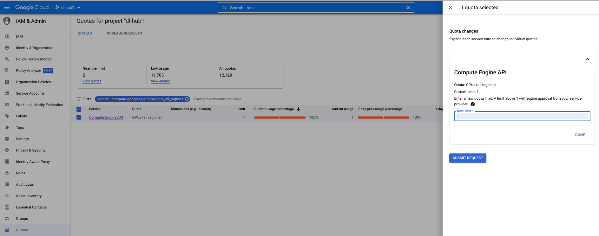
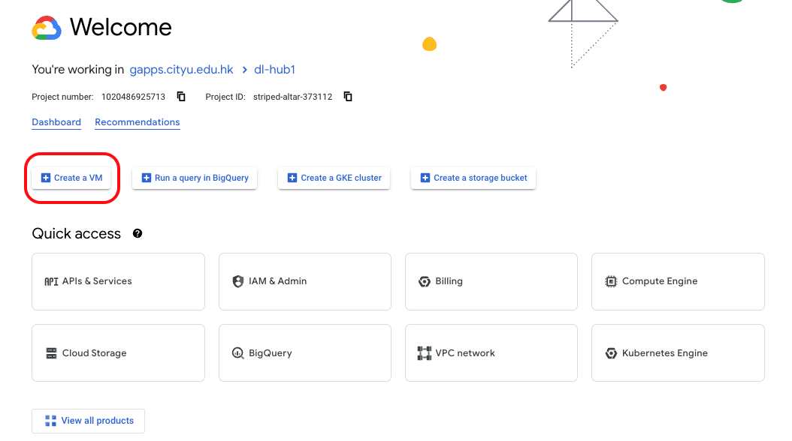
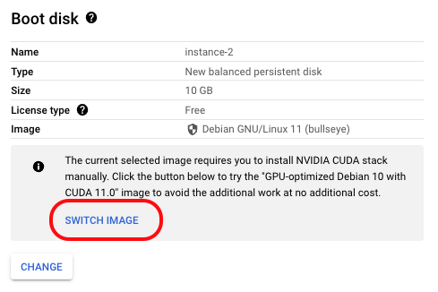
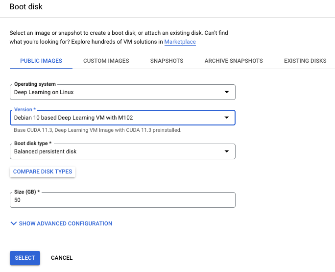
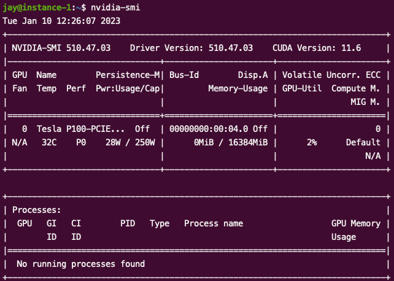
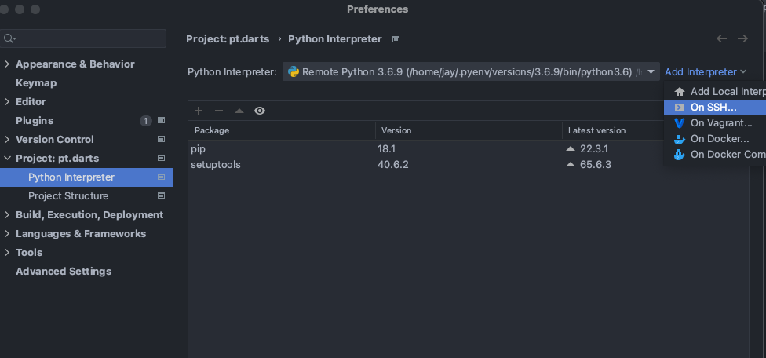
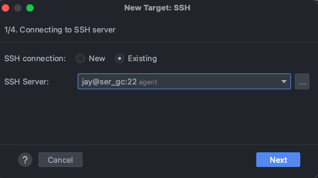
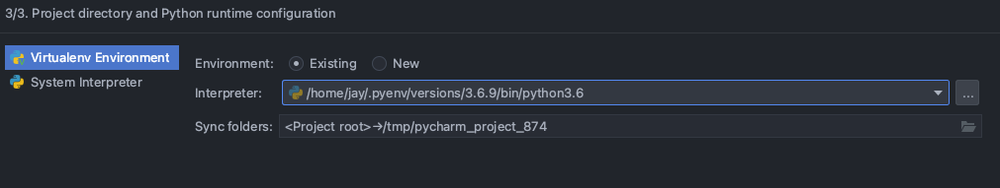
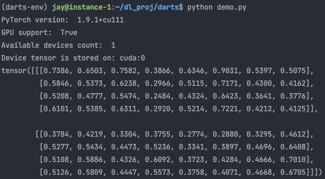

Recording How to Request a Google Cloud Compute Engine VM with personalized GPU.
1. Request a Virtual Machine
1.1 Expand Individual Quotas Limitation
For a new account who want to request a VM with GPU on the google cloud compute engine, the first thing to do is to expand the individual quotas. Otherwise, you will fail and receieve some error infomation like “Your project has reached its limit for GPUS_ALL_REGIONS globally”.
To expand the individual quotas, click as below order: “Google Cloud” > “IAM & Admin” > “Quotas(left bar)” > “Filter: Metric:compute.googleapis.com/gpus_all_regions” > “click the item” > “Edit Quotas” > “Set new limit as 1”.
And for the request description, you can write you purpose just like: Do some deep learning expriements.

1.2 Request a VM with GPU
After individual GPU quota limitation being expanded successfully, a virtual machine with GPU can begin to be requested.
First of all, just open google cloud homepage and click the “Create a VM” buttom.

Secondly, some basic settings, like VM name, region, disk and so on should be put in. And especially, for the Machine Configuration, just click GPU to pick up the target GPU type.
To avoid some annoying cuda configurations, you can just click the Switch Image bottom in the Boot Disk buttom and select your favourite image among different OS system, disk size and cuda version.


When all settings have been done, you can then create your VM.
2. Configure the Project Dependencies
2.1 Remote ssh Configuration
Once VM is constructed on Google Cloud, not only access on the website directly is allowed, but also local ssh to access it can be applied to. To achieve it, simple two steps should be done:
3.1.2 Online
For online Google Cloud page setting side, the user’s ssh key is supposed to save in the Meta & dataSSH KEYS Website.
The personal ssh key can be found in private server as the local path: ~/.ssh/id_rsa.pub. If the ssh key haven’t be created, this website https://cloud.google.com/compute/docs/connect/create-ssh-keys may be helpfully.
Then, we can copy the content in the Google Platform website to make it able to identify you.
BTW, the id_rsa.pub content behind the
=should be replaced to the username as which you would like to login in.
3.1.3 Local
To access the Google cloud VM more efficient, we can assign an alias to the VM ip.
The VM ip address is easy to find on its detail page, and we should append it with its alias to /etc/hosts.
Just like:
1 | 192.168.0.1 ServerAlias |
The you can use ssh to access your vm:
1 | ssh UserName@ServerAlias |
2.2 Check VM Info
In session 2, we select the “GPU-optimized Debian 10 with CUDA 11.0” image which help us to avoid the additional work at no additional cost. We can use command nvidia-smi to check the gpu detail, as shown below”

2.3 Pycharm ssh Python Interpreter
Pyenv and virtualenv help us to manage different the python versions. Using below commands to install pyenv, virtualenv and python3.6.9.
1 | python dependencies |
Then, we can use ssh python interpreter and project synchronization to edit the code in the local code editor and run it on the server.
Firstly, open the “Pycharm > References > Python Interpreter > Add Interpreter > On SSH”.

Secondly, setting the SSH connection as Existing, and put Username@ServerAlias in the SSH Server.

When “Introspection completed” appeared means the server is connected successfully. And then click next, we should set the Project directory and Python runtime configuration.

Now we finished the remote setting, the saved file will be upload to the server to keep the synchronization. To run the project on the server, we can open “Tools > Start SSH Session” to ssh to server and run the project code.
3. Result
We can run some toy code on the server to check whether the gpu is accessible.
1 | print("PyTorch version: ", torch.__version__) |

GPU works, have fun!